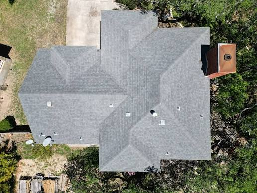

07 / The AI Model
The AI Model
This is the centerpiece of the pipeline: a vision model that looks at a real roof photo and reasons about what it sees, not a rules-based formula, an actual AI system making a judgment call. It runs on Azure AI Foundry, directed by one prompt: describe what you see, assign a severity tier from 1 to 5, and explain why. Every result comes with a reason attached, not just a number. We built it ourselves end to end, deployed the model, wrote a script to call it, and wrapped it in a Flask backend that runs live on Render right now, even when our laptops are off.
Try It Live
Try It Live
This is a real, working connection to a vision model deployed on Azure AI Foundry, not a simulated result. Upload a roof photo and it will actually analyze it.
In case the live demo isn't reachable right now, here's a real result the model produced on an actual roof photo:

Tier 3, Moderate Damage
Asphalt composition shingles with multiple circular hail impact marks and localized granule loss. Several impacts expose the darker shingle mat, consistent with moderate damage that would shorten shingle life and likely require repair.
A Second Approach
A Second Approach: Physics-Based Verification
The Foundry model above reasons straight from a photo to a damage tier. Kyle built a second, independent pathway that does it differently: Gemini reads the physical evidence in the photo, material, dent shape, damage pattern, and an estimated hail size, and hands those measurements to the physics-based damage model instead of guessing the final tier itself. Two different AI approaches, feeding one shared engineering pipeline.
Roof age, slope, and temperature aren't visible in a single overhead photo, so this demo uses reasonable placeholder averages for them. A real deployment would pull those from property records instead of guessing.
In case the live demo isn't reachable right now (Gemini's API can occasionally return a temporary overload error), here's a real result it produced on an actual roof photo:
High Risk · 3-tab Asphalt
Estimated hail size 1.5 in, circular dents, random distribution, 88% AI confidence. Impact energy 11.07 J, damage probability 100%. "Multiple random, circular impact bruises with localized granule displacement and substrate depression characteristic of hail impact."
A Real Limitation
A Real Limitation
Both models above are real and working, but we'd rather show you where this breaks than only where it works.

Tier 1 · Missed Damage
Real hail impact, tiered as minimal. From directly overhead, subtle bruising can look like ordinary roof aging, exactly why a human adjuster stays in the loop on every flagged claim.
Both models work through prompting alone, neither has been trained on our own data. Cases like this one are exactly why fine-tuning on real Travelers claims is the priority next step, and exactly why we're not asking you to trust this blindly today. We're asking for what would let us fix it.
- Fine-tuning on real data: train on actual claims history instead of general prompting.
- Adjuster feedback loop: use adjuster corrections to improve the model over time, RLHF-style.
- Expanded fraud forensics: extend the same vision model to pixel-level manipulation detection.